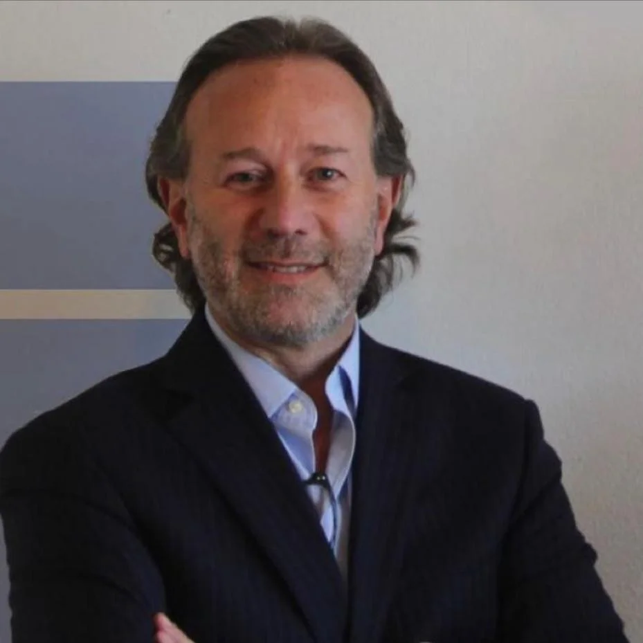

in
Pablo Singerman
Sócio fundador e diretor
Dr. Pablo Singerman. Economista, investigador y consultor internacional especializado en economía del turismo y desarrollo estratégico. Co-fundador y director de Singerman & Makón y co-fundador de Metrix Inteligencia Artificial S.A. Actualmente, Vicepresidente para las Américas de la Organización Mundial del Enoturismo (OMET).
Amplia trayectoria liderando proyectos de planificación turística, marketing y observatorios económicos en América Latina, además de dirigir la Maestría en Economía y Turismo de la Universidad de Buenos Aires.